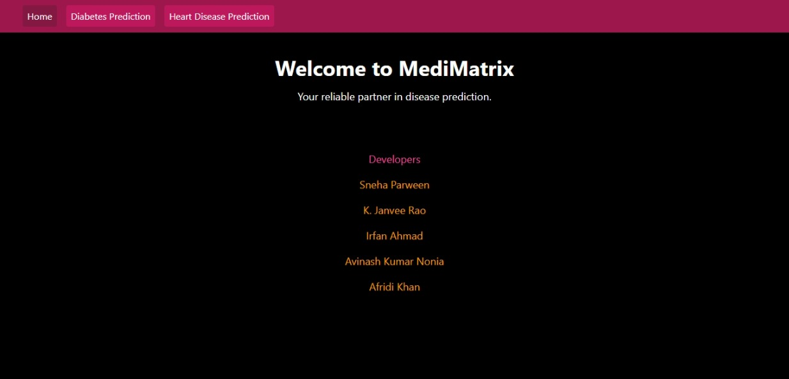
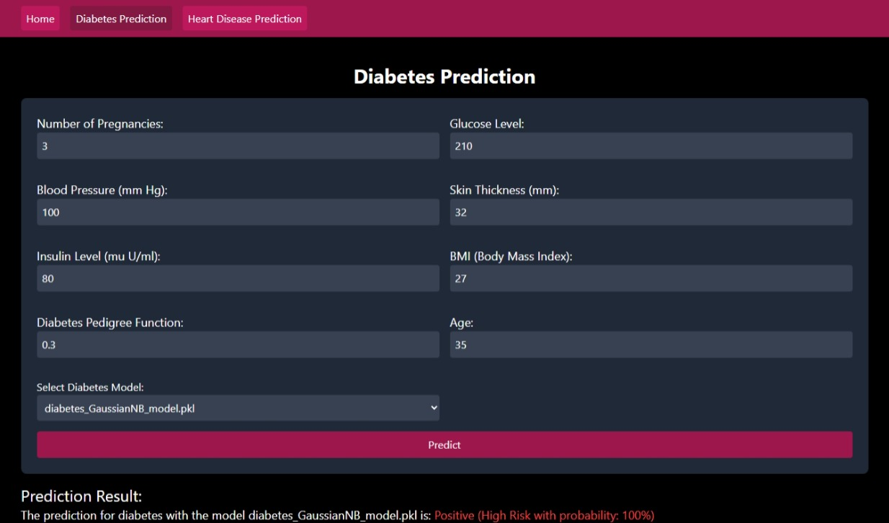
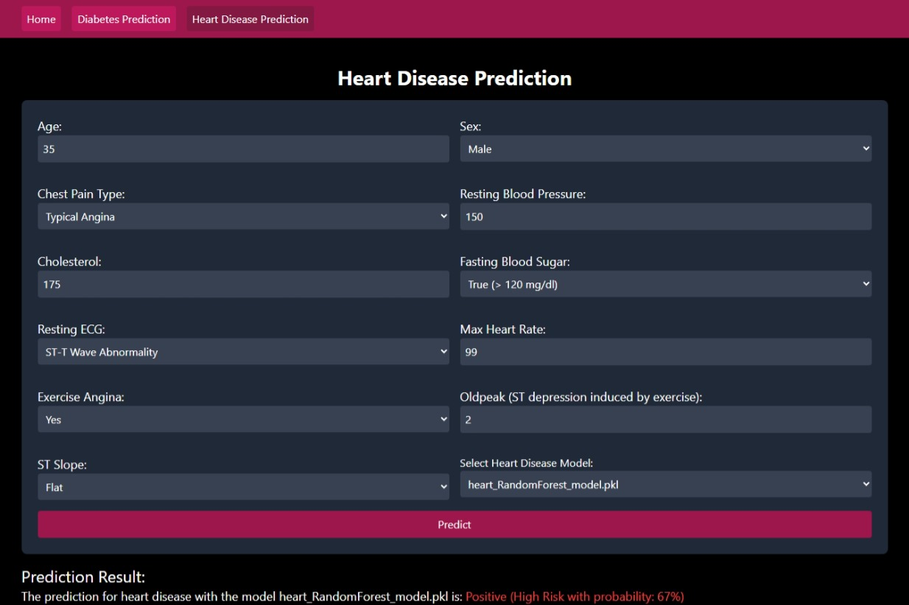

Medi-Matrix
Disease Prediction System
Project Overview
Medi-Matrix is a Flask-based disease prediction web application that assists users
in obtaining preliminary health insights based on symptom inputs.
The system uses machine learning models trained on medical datasets to generate
real-time prediction results from user-provided symptoms.
The project follows modular backend architecture and connects frontend forms with
prediction logic for dynamic result rendering.
Tech / Tools Used
- Python
- Flask Framework
- Machine Learning Models
- Dataset Preprocessing and Training
- HTML, CSS / Tailwind CSS, JavaScript
- Google Colab
- Git & GitHub
Features
- Symptom-based disease prediction interface
- Dataset-driven model training pipeline
- Backend prediction API workflow
- Modular MVC-inspired project structure
- User-friendly input form processing
Project Screenshots



Challenges & Learning
- Machine learning model selection and evaluation
- Data preprocessing and feature handling
- Backend prediction integration with frontend forms
- Performance considerations for inference workflow